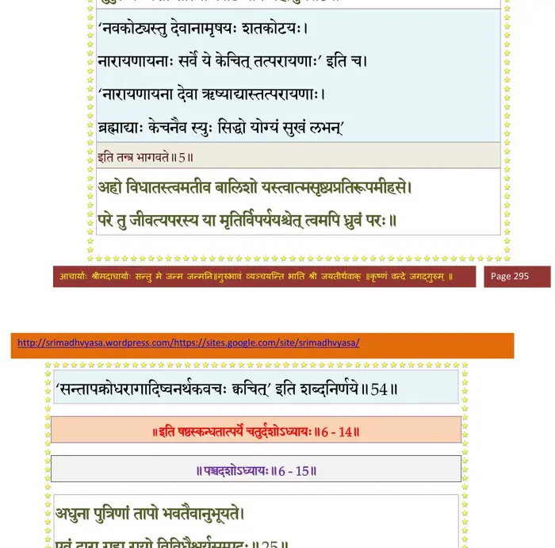

स्कन्ध 6 · अध्याय 14
श्लोक १
परीक्षिदुवाच–
रजस्तमस्स्वभावस्य ब्रह्मन् वृत्रस्य पाप्मनः ।
नारायणे भगवति कथमासीद् दृढा रतिः।। १ ।।
रजस्तमस्स्वभावस्य ब्रह्मन् वृत्रस्य पाप्मनः ।
नारायणे भगवति कथमासीद् दृढा रतिः।। १ ।।
श्लोक २
देवानां शुद्धसत्वानामृषीणां चामलात्मनाम् ।
भक्तिर्मुकुन्दचरणे न प्रायेणोपजायते।। २ ।।
भक्तिर्मुकुन्दचरणे न प्रायेणोपजायते।। २ ।।
श्लोक ३
रजोभिस्समसंख्याताः पार्थिवैरिह जन्तवः ।
तेषां ये केचनेहन्ते श्रेयो वै मनुजादयः।। ३ ।।
तेषां ये केचनेहन्ते श्रेयो वै मनुजादयः।। ३ ।।
श्लोक ४
प्रायो मुमुक्षवस्तेषां केचनेह द्विजोत्तमाः ।
मुमुक्षूणां सहस्रेषु कश्चिन्मुच्येत सिद्ध्यति।। ४ ।।
मुमुक्षूणां सहस्रेषु कश्चिन्मुच्येत सिद्ध्यति।। ४ ।।
श्लोक ५
मुक्तानामपि सिद्धानां नारायणपरायणः ।
सुदुर्लभः प्रशान्तात्मा कोटिष्वपि महामुने।। ५ ।।
सुदुर्लभः प्रशान्तात्मा कोटिष्वपि महामुने।। ५ ।।
भागवततात्पर्यनिर्णय

श्लोक ६
वृत्रस्तु स कथं पापः सर्वलोकोपतापनः ।
इत्थं दृढमतिः कृष्ण आसीत् संग्राम उल्बणे।। ६ ।।
इत्थं दृढमतिः कृष्ण आसीत् संग्राम उल्बणे।। ६ ।।
श्लोक ७
अत्र नः संशयो भूयान् श्रोतुं कौतूहलं प्रभो ।
यः पौरुषेण समरे सहस्राक्षमतोषयत्।। ७ ।।
यः पौरुषेण समरे सहस्राक्षमतोषयत्।। ७ ।।
श्लोक ८
सूत उवाच–
परीक्षितोऽथ संप्रश्नं भगवान् बादरायणिः ।
निशम्य श्रद्धधानस्य प्रतिनन्द्य वचोऽब्रवीत्।। ८ ।।
परीक्षितोऽथ संप्रश्नं भगवान् बादरायणिः ।
निशम्य श्रद्धधानस्य प्रतिनन्द्य वचोऽब्रवीत्।। ८ ।।
श्लोक ९
श्रीशुक उवाच–
श्रृणुष्वावहितो राजन्नितिहासं पुरातनम् ।
श्रुतं द्वैपायनमुखान्नारदाद्देवलादपि।। ९ ।।
श्रृणुष्वावहितो राजन्नितिहासं पुरातनम् ।
श्रुतं द्वैपायनमुखान्नारदाद्देवलादपि।। ९ ।।
श्लोक १०
आसीद् राजा सार्वभौमः शूरसेनेषु वै नृप ।
चित्रकेतुरिति ख्यातो यस्यासीत् कामधुङ् मही।। १० ।।
चित्रकेतुरिति ख्यातो यस्यासीत् कामधुङ् मही।। १० ।।
श्लोक ११
तस्य भार्यासहस्राणां सहस्राणि दशाभवन् ।
सान्तानिकश्चापि नृपो न लेभे तासु सन्ततिम् ।। ११ ।।
सान्तानिकश्चापि नृपो न लेभे तासु सन्ततिम् ।। ११ ।।
श्लोक १२
रूपौदार्यवयोजन्मविद्यैश्वर्यश्रियादिभिः ।
सम्पन्नस्य गुणैस्सर्वैश्चिन्ता वन्ध्यापतेरभूत् ।। १२ ।।
सम्पन्नस्य गुणैस्सर्वैश्चिन्ता वन्ध्यापतेरभूत् ।। १२ ।।
श्लोक १३
न तस्य सम्पदः सर्वा महिष्यो वामलोचनाः ।
सार्वभौमस्य भूश्चेयं नाभूवन् प्रीतिहेतवः ।। १३ ।।
सार्वभौमस्य भूश्चेयं नाभूवन् प्रीतिहेतवः ।। १३ ।।
श्लोक १४
तस्यैकदा तु भवनमङ्गिरा भगवान् ऋषिः ।
लोकाननुचरन्नेतानुपागच्छद्यदृच्छया ।। १४ ।।
लोकाननुचरन्नेतानुपागच्छद्यदृच्छया ।। १४ ।।
श्लोक १५
तं पूजयित्वा विधिवत्प्रत्युत्थानार्हणादिभिः ।
कृतातिथ्यमुपासीदत् सुखासीनं समाहितः ।। १५ ।।
कृतातिथ्यमुपासीदत् सुखासीनं समाहितः ।। १५ ।।
श्लोक १६
महर्षिस्तमुपासीनं प्रश्रयावनतं क्षितौ ।
प्रतिपूज्य महाराज समाभाष्येदमब्रवीत् ।। १६ ।।
प्रतिपूज्य महाराज समाभाष्येदमब्रवीत् ।। १६ ।।
श्लोक १७
अङ्गीरा उवाच
अपि तेऽनामयं स्वस्ति प्रकृतीनां तथाऽऽत्मनः ।
यथा प्रकृतिभिर्गुप्तः पुमान् राजा च सप्तभिः ।। १७ ।।
अपि तेऽनामयं स्वस्ति प्रकृतीनां तथाऽऽत्मनः ।
यथा प्रकृतिभिर्गुप्तः पुमान् राजा च सप्तभिः ।। १७ ।।
श्लोक १८
आत्मानं प्रकृतिष्वद्धा निधाय श्रेय आप्नुयात् ।
राज्ञस्तथा प्रकृतयो नरदेवाहितादयः ।। १८ ।।
राज्ञस्तथा प्रकृतयो नरदेवाहितादयः ।। १८ ।।
श्लोक १९
अपि दाराः सुतामात्या भृत्याः श्रेण्योऽथ मन्त्रिणः ।
पौरा जानपदा भूपा आत्मा च वशवर्तिनः ।। १९ ।।
पौरा जानपदा भूपा आत्मा च वशवर्तिनः ।। १९ ।।
श्लोक २०
यस्यात्माऽनुवशश्चेत् स्यात् सर्वे तद्वशगा इमे ।
लोकाः सपाला यच्छन्ति सर्वे बलिमतन्द्रिताः ।। २० ।।
लोकाः सपाला यच्छन्ति सर्वे बलिमतन्द्रिताः ।। २० ।।
श्लोक २१
आत्मनः प्रीतयेऽप्यात्मा परतः स्वत एव वा ।
लक्षयेऽलब्धकामं त्वां चिन्तया शबलं मुखम् ।। २१ ।।
लक्षयेऽलब्धकामं त्वां चिन्तया शबलं मुखम् ।। २१ ।।
श्लोक २२
श्रीशुक उवाच–
एवं विकल्पितो राजन् विदुषा मुनिनाऽपि सः ।
प्रश्रयावनतोऽभ्याह प्रजाकामस्ततो मुनिम् ।। २२ ।।
एवं विकल्पितो राजन् विदुषा मुनिनाऽपि सः ।
प्रश्रयावनतोऽभ्याह प्रजाकामस्ततो मुनिम् ।। २२ ।।
श्लोक २३
चित्रकेतुरुवाच–
भगवन् किं न विदितं तपोज्ञानसमाधिभिः ।
योगिनां ध्वस्तपापानां बहिरन्तः शरीरिषु ।। २३ ।।
भगवन् किं न विदितं तपोज्ञानसमाधिभिः ।
योगिनां ध्वस्तपापानां बहिरन्तः शरीरिषु ।। २३ ।।
श्लोक २४
तथाऽपि पृच्छतो ब्रूयां ब्रह्मन्नात्मनि चिन्तितम् ।
भवतो विदुषश्चापि चोदितस्त्वदनुज्ञया ।। २४ ।।
भवतो विदुषश्चापि चोदितस्त्वदनुज्ञया ।। २४ ।।
श्लोक २५
लोकपालैरपि प्रार्थ्याः साम्राज्यैश्वर्यसम्पदः ।
न नन्दयन्त्यप्रजं मां क्षुत्तृट्क्षाममिवापरे ।। २५ ।।
न नन्दयन्त्यप्रजं मां क्षुत्तृट्क्षाममिवापरे ।। २५ ।।
श्लोक २६
तन्नः पाहि महाभाग पूर्वैः सह गतं तमः ।
यथा तरेम दुस्तारं प्रजया तद् विधेहि नः ।। २६ ।।
यथा तरेम दुस्तारं प्रजया तद् विधेहि नः ।। २६ ।।
श्लोक २७
श्रीशुक उवाच–
इत्यर्थितः स भगवान् कृपालुर्ब्रह्मणः सुतः ।
श्रपयित्वा चरुं त्वाष्ट्रं त्वष्टारमयजद् विभुः ।। २७ ।।
इत्यर्थितः स भगवान् कृपालुर्ब्रह्मणः सुतः ।
श्रपयित्वा चरुं त्वाष्ट्रं त्वष्टारमयजद् विभुः ।। २७ ।।
श्लोक २८
ज्येष्ठा श्रेष्ठा च या राज्ञो महिषीणाञ्च भारत ।
नाम्ना कृतद्युतिस्तस्यै यज्ञोच्छिष्टमदाद् विभुः ।। २८ ।।
नाम्ना कृतद्युतिस्तस्यै यज्ञोच्छिष्टमदाद् विभुः ।। २८ ।।
श्लोक २९
अथाह नृपतिं राजन् भवितैकस्तवात्मजः ।
हर्षशोकप्रदस्तुभ्यमिति ब्रह्मसुतो ययौ ।। २९ ।।
हर्षशोकप्रदस्तुभ्यमिति ब्रह्मसुतो ययौ ।। २९ ।।
श्लोक ३०
साऽपि तत्प्राशनादेव चित्रकेतोरधारयत् ।
गर्भं कृतद्युतिर्देवी कृत्तिकाऽग्नेरिवात्मजम् ।। ३० ।।
गर्भं कृतद्युतिर्देवी कृत्तिकाऽग्नेरिवात्मजम् ।। ३० ।।
श्लोक ३१
तस्या अनुदिनं गर्भः शुक्लपक्ष इवोडुपः ।
ववृधे शूरसेनस्य तेजसा शनकैर्नृप ।। ३१ ।।
ववृधे शूरसेनस्य तेजसा शनकैर्नृप ।। ३१ ।।
श्लोक ३२
अथ काल उपावृत्ते कुमारः समजायत ।
जनयन् शूरसेनानां शृृण्वतां परमां मुदम् ।। ३२ ।।
जनयन् शूरसेनानां शृृण्वतां परमां मुदम् ।। ३२ ।।
श्लोक ३३
स राजा सुकुमारस्य स्नातः शुचिरलङ्कृतः ।
वाचयित्वाऽऽशिषो विप्रैः कारयामास जातकम् ।। ३३ ।।
वाचयित्वाऽऽशिषो विप्रैः कारयामास जातकम् ।। ३३ ।।
श्लोक ३४
तेभ्यो हिरण्यं रजतं वासांस्याभरणानि च ।
ग्रामान् हयान् गजान् प्रादाद् धेनूनामर्बुदानि षट् ।। ३४ ।।
ग्रामान् हयान् गजान् प्रादाद् धेनूनामर्बुदानि षट् ।। ३४ ।।
श्लोक ३५
ववर्ष कामानन्येषां पर्जन्य इव देहिनाम् ।
धन्यं यशस्यमायुष्यं कुमारस्य महात्मनः ।। ३५ ।।
धन्यं यशस्यमायुष्यं कुमारस्य महात्मनः ।। ३५ ।।
श्लोक ३६
कृच्छ्रलब्धेऽस्य राजर्षेस्तनयेऽनुदिनं पितुः ।
यथा निःस्वस्य कृच्छ्राप्ते धने स्नेहोऽन्ववर्धत ।। ३६ ।।
यथा निःस्वस्य कृच्छ्राप्ते धने स्नेहोऽन्ववर्धत ।। ३६ ।।
श्लोक ३७
मातुस्त्वतितरां पुत्रे स्नेहो मोहसमुद्भवः ।
कृतद्युतेः सपत्नीनां प्रजाकामज्वरोऽभवत् ।। ३७ ।।
कृतद्युतेः सपत्नीनां प्रजाकामज्वरोऽभवत् ।। ३७ ।।
श्लोक ३८
चित्रकेतोरतिप्रीतिः यथा दारे प्रजावति ।
न तथाऽन्येषु सञ्जज्ञे बालं लालयतोऽन्वहम् ।। ३८ ।।
न तथाऽन्येषु सञ्जज्ञे बालं लालयतोऽन्वहम् ।। ३८ ।।
श्लोक ३९
ताः पर्यतप्यन्नात्मानं गर्हयन्त्योऽभ्यसूयया ।
अनपत्येन दुःखेन राज्ञश्चानादरेण च ।। ३९ ।।
अनपत्येन दुःखेन राज्ञश्चानादरेण च ।। ३९ ।।
श्लोक ४०
धिगप्रजां स्त्रियं पापां पत्युश्चागृहसम्मताम् ।
सप्रजाभिः सपत्नीभिर्दासीमिव तिरस्कृताम् ।। ४० ।।
सप्रजाभिः सपत्नीभिर्दासीमिव तिरस्कृताम् ।। ४० ।।
श्लोक ४१
दासीनां को नु सन्तापः स्वामिनः परिचर्यया ।
अभीक्ष्णं लब्धमानानां दास्या दासीव दुर्भगाः ।। ४१ ।।
अभीक्ष्णं लब्धमानानां दास्या दासीव दुर्भगाः ।। ४१ ।।
श्लोक ४२
एवं सन्दह्यमानानां सपत्न्याः पुत्रसम्पदा ।
राज्ञोऽसम्मतवृत्तीनां विद्वेषो बलवानभूत् ।। ४२ ।।
राज्ञोऽसम्मतवृत्तीनां विद्वेषो बलवानभूत् ।। ४२ ।।
श्लोक ४३
विद्वेषान्नष्टमतयः स्त्रियो दारुणचेतसः ।
गरं ददुः कुमाराय विद्वेषान्नृपतिं प्रति ।। ४३ ।।
गरं ददुः कुमाराय विद्वेषान्नृपतिं प्रति ।। ४३ ।।
श्लोक ४४
कृतद्युतिरजानन्ती सपत्नीनामघं महत् ।
सुप्त एवेति सञ्चिन्त्य निरीक्ष्य व्यचरद् गृहे ।। ४४ ।।
सुप्त एवेति सञ्चिन्त्य निरीक्ष्य व्यचरद् गृहे ।। ४४ ।।
श्लोक ४५
शयानं सुचिरं बालमुपधार्य मनीषिणी ।
पुत्रमानय मे भद्रे इति धात्रीमचोदयत् ।। ४५ ।।
पुत्रमानय मे भद्रे इति धात्रीमचोदयत् ।। ४५ ।।
श्लोक ४६
सा शयानमुपव्रज्य दृष्ट्वा चोत्तारलोचनम् ।
प्राणेन्द्रियात्मभिस्त्यक्तं हताऽस्मीत्यपतद् भुवि ।। ४६ ।।
प्राणेन्द्रियात्मभिस्त्यक्तं हताऽस्मीत्यपतद् भुवि ।। ४६ ।।
श्लोक ४७
तस्यास्तदाकर्ण्य भृशातुरस्वरं घ्नन्त्याः कराभ्यामुर उच्चकैरपि ।
प्रविश्य राज्ञी त्वरयाऽऽत्मजान्तिकं ददर्श बालं सहसा मृतं सुतम् ।। ४७ ।।
प्रविश्य राज्ञी त्वरयाऽऽत्मजान्तिकं ददर्श बालं सहसा मृतं सुतम् ।। ४७ ।।
श्लोक ४८
पपात भूमौ परिवृद्धया शुचा मुमोह विभ्रष्टशिरोरुहाम्बरा ।
ततो नृपान्तःपुरवर्तिनो जना नराश्च नार्यश्च निशम्य रोदनम् ।
आगत्य तुल्यव्यसनाः सुदुःखितास्ताश्च व्यलीकं रुरुदुः कृतागसः।। ४८ ।।
ततो नृपान्तःपुरवर्तिनो जना नराश्च नार्यश्च निशम्य रोदनम् ।
आगत्य तुल्यव्यसनाः सुदुःखितास्ताश्च व्यलीकं रुरुदुः कृतागसः।। ४८ ।।
श्लोक ४९
श्रुत्वा मृतं पुत्रमलक्षितान्तकं विनष्टदृष्टिः प्रपतन् स्खलन् पथि ।
स्नेहानुबन्धैधितया शुचा भृशं विमूर्छितोऽनुप्रकृतिर्द्विजैर्वृतः।। ४९ ।।
स्नेहानुबन्धैधितया शुचा भृशं विमूर्छितोऽनुप्रकृतिर्द्विजैर्वृतः।। ४९ ।।
श्लोक ५०
पपात बालस्य स पादमूले मृतस्य विस्रस्तशिरोरुहाम्बरः ।
दीर्घं श्वसन् बाष्पकलोपरोधतो निरुद्धकण्ठो न शशाक भाषितुम्।। ५० ।।
दीर्घं श्वसन् बाष्पकलोपरोधतो निरुद्धकण्ठो न शशाक भाषितुम्।। ५० ।।
श्लोक ५१
पतिं निरीक्ष्योरुशुचाऽर्पितं तदा मृतं च बालं सुतमेकसन्ततिम् ।
जनस्य राज्ञी प्रकृतेश्च हृद्रुजं सती दधाना विललाप चित्रधा।।५१।।
जनस्य राज्ञी प्रकृतेश्च हृद्रुजं सती दधाना विललाप चित्रधा।।५१।।
श्लोक ५३
स्तनद्वयं कुङ्कुमपङ्कमण्डितं निषिञ्जती साञ्जनबाष्पबिन्दुभिः ।
विकीर्य केशान् विगलत्स्रजः सुतं शुशोच चित्रं कुररीव दुष्करम्।। ५३ ।।
विकीर्य केशान् विगलत्स्रजः सुतं शुशोच चित्रं कुररीव दुष्करम्।। ५३ ।।
श्लोक ५४
अहो विधातस्त्वमतीव बालिशो यस्त्वात्मसृष्ट्यप्रतिरूपमीहसे ।
परे तु जीवत्यपरस्य या मृतिः विपर्ययश्चेत् त्वमसि ध्रुवं परः ।। ५४ ।।
परे तु जीवत्यपरस्य या मृतिः विपर्ययश्चेत् त्वमसि ध्रुवं परः ।। ५४ ।।
श्लोक ५५
न हि क्रमश्चेदिह मृत्युजन्मनोः शरीरिणामस्तु तदात्मकर्मभिः ।
यः स्नेहपाशो निजसर्गवृद्धये स्वयं कृतस्ते तमिमं विवृश्चसि ।। ५४
त्वं तात नार्हसि च मां कृपणामनाथां
त्यक्तुं विचक्ष्व पितरं तव शोकतप्तम् ।
अञ्जस्तरेम भवताऽप्रजदुस्तरं यद्
ध्वान्तं न याह्यकरुणेन यमेन दूरम्।। ५५ ।।
यः स्नेहपाशो निजसर्गवृद्धये स्वयं कृतस्ते तमिमं विवृश्चसि ।। ५४
त्वं तात नार्हसि च मां कृपणामनाथां
त्यक्तुं विचक्ष्व पितरं तव शोकतप्तम् ।
अञ्जस्तरेम भवताऽप्रजदुस्तरं यद्
ध्वान्तं न याह्यकरुणेन यमेन दूरम्।। ५५ ।।
श्लोक ५६
उत्तिष्ठ तात त इमे शिशवो वयस्या-
स्त्वामाह्वयन्ति नृपनन्दन संविहर्तुम् ।
सुप्तश्चिरं ह्यशनया च भवान् परीतो
भुंक्ष्व स्तनं पिब शुचो हर नः स्वकानाम्।। ५६ ।।
स्त्वामाह्वयन्ति नृपनन्दन संविहर्तुम् ।
सुप्तश्चिरं ह्यशनया च भवान् परीतो
भुंक्ष्व स्तनं पिब शुचो हर नः स्वकानाम्।। ५६ ।।
श्लोक ५७
नाहं तनूज ददृशे हतमङ्गला ते
मुग्धस्मितं मुदितवीक्षणमाननाब्जम् ।
किं वा गतोऽस्यपुनरन्वयमन्यलोकं
नीतोऽघृणेन न शृृणोमि कला गिरस्ते।। ५७ ।।
मुग्धस्मितं मुदितवीक्षणमाननाब्जम् ।
किं वा गतोऽस्यपुनरन्वयमन्यलोकं
नीतोऽघृणेन न शृृणोमि कला गिरस्ते।। ५७ ।।
श्लोक ५८
श्रीशुक उवाच–
विलपन्त्यां मृतं पुत्रमिति चित्रविलापनैः ।
चित्रकेतुर्भृशं तप्तो मुक्तकण्ठो रुरोद ह।। ५८ ।।
विलपन्त्यां मृतं पुत्रमिति चित्रविलापनैः ।
चित्रकेतुर्भृशं तप्तो मुक्तकण्ठो रुरोद ह।। ५८ ।।
श्लोक ५९
तयोर्विलपतोः सर्वे दम्पत्योस्तदनुव्रताः ।
रुरुदुः स्म नरा नार्यः सर्वमासीदचेतनम्।। ५९ ।।
रुरुदुः स्म नरा नार्यः सर्वमासीदचेतनम्।। ५९ ।।
श्लोक ६०
एवं कश्मलमापन्नं नष्टसञ्ज्ञमनायकम् ।
ज्ञात्वाऽङ्गिरो नाम मुनिराजगाम सनारदः।। ६० ।।
ज्ञात्वाऽङ्गिरो नाम मुनिराजगाम सनारदः।। ६० ।।
।। इति श्रीमद्भागवते षष्ठस्कन्धे चतुर्दशोऽध्यायः ।।